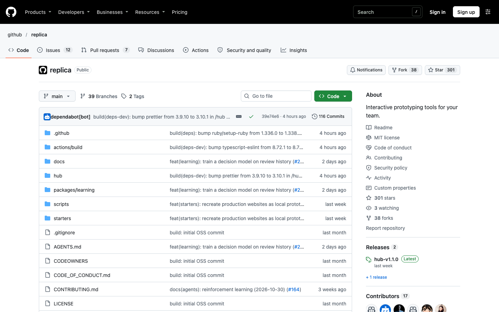
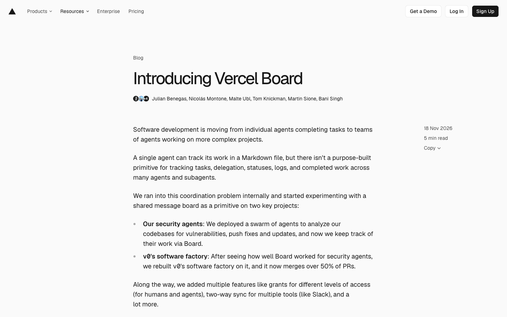
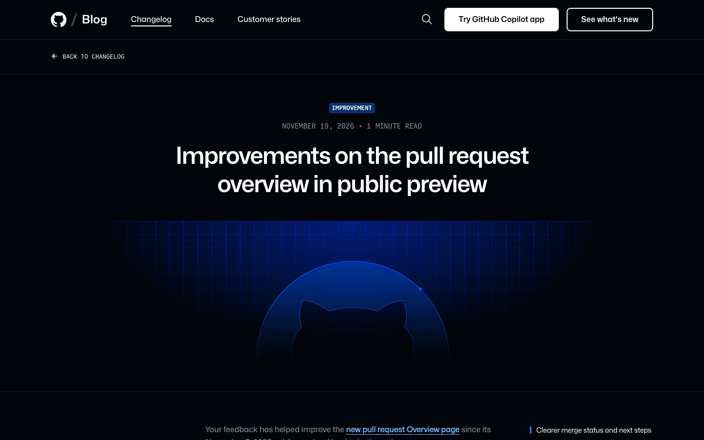
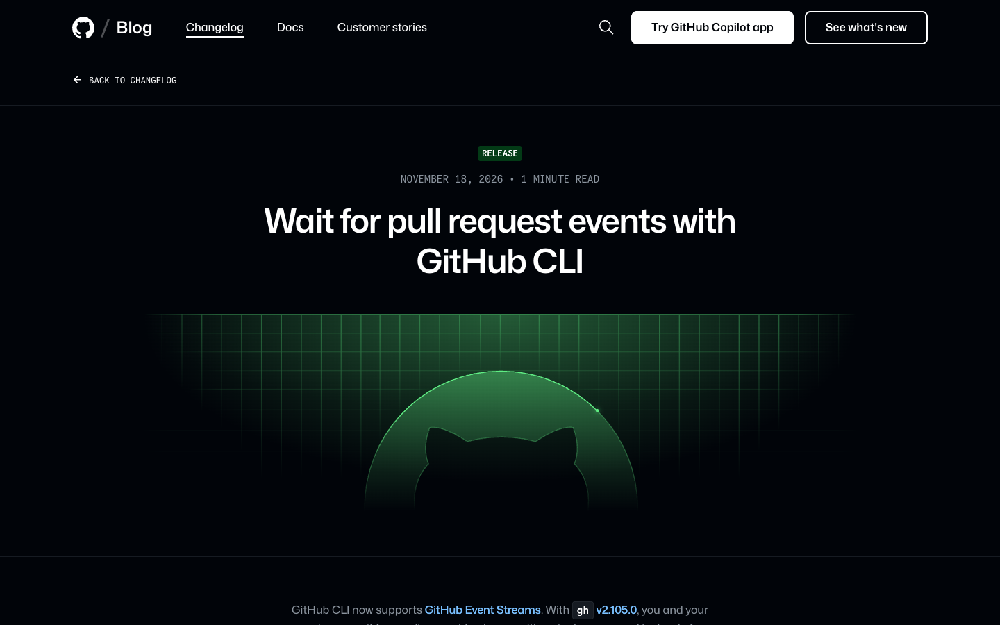
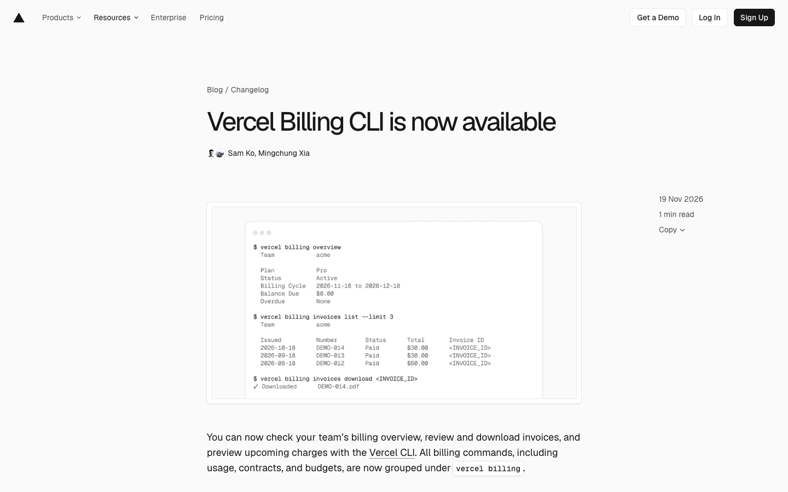
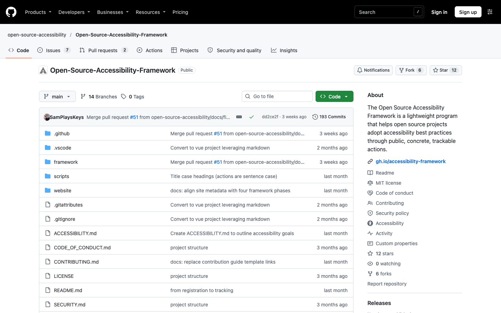
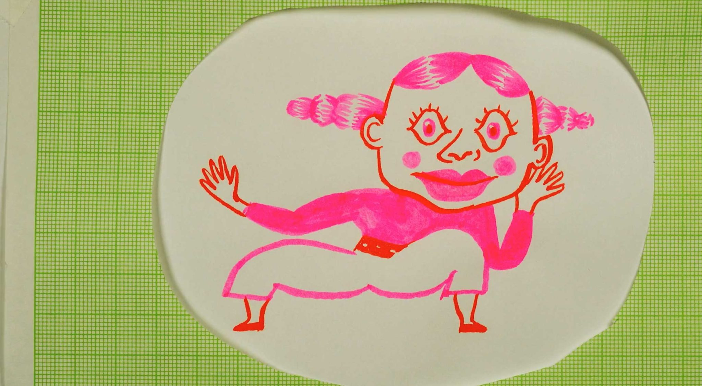

今天几条更新看着分散，实际都在补同一件事：让协作从聊天记录变成可追踪协议。Replica 把设计系统、原型和评论放进同一条反馈链；Vercel Board 把任务领取、续租和权限做成状态；GitHub 则把 PR 是否可合并、还缺什么、什么时候该唤醒 agent 说清楚。真正省时间的不是多一个会生成的入口，而是让反馈、责任、成本和下一步都能被人和机器同时读懂。除公开页面与 Vimeo 播放器外，今天这些工具都还没做项目级实测，不把官方说明扩写成亲测结论。

Replica 是 GitHub Design 与 Microsoft CoreAI Design 开源的 AI 原型工具：设计师先写组件、模式和文档约束，产品与工程再在 GitHub Copilot app 里用自然语言生成、并排修改和发布原型。MIT 许可；本地路径不要求服务器或 Hub，查看成品与在 Hub 评审也不要求 Copilot 订阅。
边界比演示更重要：共享 Hub 需要团队自己准备 Linux、独立域名、通配 DNS、HTTPS 和 GitHub 权限；用 Copilot 方案或自带模型服务商，成本和数据条款也跟着各自供应商走。它不是“把 Figma 换成 prompt”，而是让设计系统成为生成前的输入、评论成为下一轮的学习材料。

Vercel Board 是实验性的 headless message board：channel 管范围，thread 留上下文，label 记 PR 与状态；agent 可以领取任务、发布进度、续租 lease，再提交结果。它通过 CLI / JavaScript SDK 工作，也提供不同访问级别的 grants 与 Slack 等工具的双向同步。
这类产品最容易被包装成“AI 项目管理”，Board 反而把界面拿掉了。好处是状态能进脚本、日志能进审计；代价是团队必须先定义 claim、超时、交接和完成条件，否则只会得到一个更自动化的群聊。还没实测，先不下稳定性结论。

GitHub 的新 PR Overview 继续修正“状态看起来比实际更糟”的问题：可选检查失败不再把可合并 PR 伪装成阻塞，缺失要求会直接写出待处理项，readiness summary 也会明确什么时候无需动作。小屏继续显示源/目标分支，已解决讨论默认折叠，force-push 记录可跳到旧、新 commit 对比。
这是状态设计，不是排版清洁。reviewer、作者和 coding agent 看到同一份 readiness 才能少做重复确认；尤其 optional check 和 required check，不能继续只靠一枚红叉表达。

gh 2.105.0 加入 gh event listen：脚本或 agent 可以等待 review、PR 状态、head 变化、冲突与 check suite 完成，默认收到第一个事件就退出，也能用 --count、--follow、--timeout 控制等待。
轮询把“没有变化”也算成工作；事件流把安静变成一个合法状态。预览目前需要 GitHub Event Streams waitlist，命令和行为仍可能变，先别把它写成唯一的生产恢复路径。

vercel billing 现在能查 plan、账单周期、欠款与历史 invoice，也能下载 PDF、预览下一张账单的 line items；加 --json 后可以直接给脚本和 agent 使用。概览与历史账单覆盖所有方案，但受团队既有账单权限约束；upcoming estimate 需要有效付费订阅，而且结算前会变化。
这次不是把网页搬进终端，而是让成本成为工作流输入。自动部署、批量截图或模型评测跑起来前，agent 至少能先读预算与预估；权限和估算值必须保留，别把“看得到”误写成“能批准”。

这个框架把无障碍拆成 Foundational、Workflow、Testing、Community 四个阶段。第一步不是跑分，而是在仓库根目录写 ACCESSIBILITY.md、建立 accessibility label，再用公开 issue 追踪进度；官方明确说它不是认证、分数或排名。
设计系统仓库最该抄的是文件位置：目标、支持环境、已知限制和反馈入口都放到贡献者能看见的地方。无障碍不该只存在于组件文档的最后一页，更不能等到发版前靠一次扫描补票。
Vimeo 原片https://vimeo.com/1236237071 · Catherine Lepagehttps://catherinelepage.com/

这支 90 秒自发短片由 Catherine Lepage 全部画在纸上，配的是 Osees 的《Together Tomorrow》。Stash 把它放在一波“让人泄气的全 AI 投稿”之后介绍，判断不需要绕：它好看不是因为反 AI，而是每一笔的摩擦、纸张网格、记号笔串色和人物比例都在参与节奏。
片子没有产品 demo 的三段式，也不靠 3D 镜头炫技。人物靠手臂、髋部和头部的重复循环踩拍，背景在作业纸、色块与拼贴之间切换；角色夸张到像随手涂鸦，但轮廓、荧光粉和红色始终把系列黏在一起。动效语言的核心是“同一动作母题，不同身体结构”，所以 90 秒能持续换人而不散。
播放器已实测：Vimeo readyState 4，播放与媒体请求正常。要把这套方法移进产品 motion，先别做长片；拿一个核心动作，分别用三种角色比例、两种纸张纹理和同一色板做 6–8 秒循环，确认动作母题能不能撑住身份差异，再谈镜头量。
gh event listen waitlist、断线恢复与事件漏送边界。今天已覆盖 Replica、Vercel Board、GitHub PR Overview readiness、GitHub CLI Event Streams、Vercel Billing CLI、Open Source Accessibility Framework；完整视频为 Catherine Lepage《Dancing on Osees》。Stash 已登记该片、OFFF Montreal panel follow-up、Raven R 与 Quorum，后两项仅保留已覆盖边界。
继续避免重复：11 月 19 日的 Figma 多图生成、OAuth / MCP allowlist、Vercel Drives 6× 读取、单秒静态部署、soft navigation、Chrome DevTools 12 月更新与 Raven R；以及 11 月 18 日的 Copilot Evals、adaptive review、secret scanning、browser use、Spatial CSS、standard build billing、PR-only previews、Blob TTL 与 Quorum。